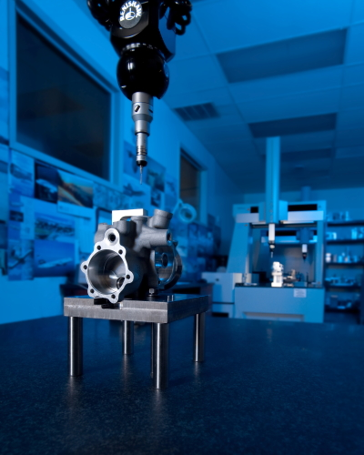

Quality Management System
Norris Precision's AS9100 Quality Management System effectively documents the processes, procedures, and responsibilities for achieving our quality policies and objectives focused on consistently meeting customer requirements and enhancing their satisfaction.
It is aligned with our organization's purpose and strategic direction to continually improve processes, reduce waste, lower costs, and prevent mistakes.
Our Quality Commitment Includes:
- Multiple high-accuracy DCC Coordinate Measuring Machines
- Ensuring conformity to stringent technical requirements
- Advanced Statistical Process Control software
- Automated real-time data collection
- Continuous performance trend analysis

Our Quality Certifications
Backed by industry-leading standards that ensure top-tier quality and reliability
AS9100D
Aerospace Quality Standard
ISO 9001
Quality Management System
Nadcap
Special Processes Accreditation
ITAR
Registered Compliance
Want to Learn More About Our Quality Processes?
Reach out to our team to understand how our quality management ensures excellence in every component we produce.
Contact Quality Team